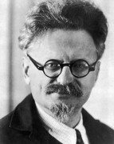

Tonio Tortudo
touche-à-tout intrépide et curieux
mon expérience
Depuis 2015
Apiculteur. Miel garanti biologique à 23%.
2011 à 2014
Prototypeur de tables à repasser. Processus révolutionnaire dérivé de la fabrication de planches à voile.
2009 à 2010
Déménageur de pistes de danse. Horaires décalés, tenue correcte exigée.
2004 à 2008
Prothésiste-chauffagiste à
l'hôpital du Val-de-Grâce
. Travail en équipe et en uniforme, ambiance sympathique.
2001 à 2003
Livreur de pizzas aux anchois et de sushis au surimi. Initiation à la mécanique, invention de la sauce au cambouis.
1999 à 2000
Apprenti buraliste. Bon contact avec la clientèle, moins bon avec le patron.
mes compétences
Jardinage
Médaille d'argent du concours agricole 2007, catégorie rutabaga.
Maquillage
Voir ci-dessous.
Tatouage
Le maquillage qui ne s'efface jamais.
Bricolage
J'aime donner des coups de marteau.
Massage
Voir ci-dessus.
ma formation
2014
Certificat de monteur d'échelle (niveau III).
2009
Thèse d'Etat de physique du liquide (
université de Toronto
).
2003
Formation de trader spécialisé en produits capillaires.
1998
Bac pro maintenance nautique.
1996
BEP de philologie.
{kind=link}